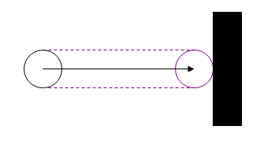

Capsule sweeps

You can perform a sweep with a capsule shape by using the
NxScene::linearCapsuleSweep() method. The results are returned via an NxSweepQueryHit structure.
NxU32 linearCapsuleSweep(const NxCapsule& worldCapsule, const NxVec3& motion, NxU32 flags, void* userData,
NxU32 nbShapes, NxSweepQueryHit* shapes, NxUserEntityReport<NxSweepQueryHit>* callback,
NxU32 activeGroups=0xffffffff, const NxGroupsMask* groupsMask=NULL);
- worldCapsule - A structure describing the capsule to sweep, in
world space.
- motion - The motion vector for the sweep.
- flags
- NX_SF_STATICS: Sweep against static shapes
- NX_SF_DYNAMICS: Sweep against dynamic shapes
- NX_SF_ALL_HITS: Report all hits rather than just closest hit
- userData - A user pointer which is provided to the user through
the callback.
- nbShapes - Number of shapes which the shapes buffer can hold.
- shapes - A user supplied buffer to store touched shapes.
- callback - A callback which allows the user to receive results
from the query.
- activeGroups - Mask used to filter out shapes based on the shapes
group(NxShape::setGroup())
- groupsMask - Group mask used for filtering with the bitwise filtering system.
Example
NxCapsule testCapsule;
testCapsule.radius = 5.0f;
testCapsule.p0 = NxVec3(0.0f, 100.0f, 0.0f);
testCapsule.p1 = NxVec3(10.0f, 70.0f, 0.0f);
float dist = 100.0f;
NxVec3 dir(0.0f, -1.0f, 0.0f);
NxU32 flags = NX_SF_STATICS|NX_SF_DYNAMICS;
NxSweepQueryHit result;
gScene->linearCapsuleSweep(testCapsule, dir*dist, flags, NULL, 1, &result, NULL);
NxShape *hitShape = result.hitShape;
NxVec3 impactPoint = result.point;
API Reference
Copyright © 2008 NVIDIA Corporation, 2701 San Tomas Expressway, Santa Clara, CA 95050 U.S.A. All rights reserved. www.nvidia.com